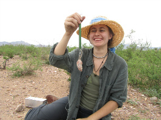

I am a chronically ill Ph.D. candidate in the Weecology lab group of Morgan Ernest and Ethan White, and more specifically, a student in the White lab. I have adapted to my physical restrictions by leveraging my computational ecologist skills to substitute a virtual presence for my physical presence. My general research interests are community ecology, macroecology, ecoinformatics, computational ecology and open access. Macroecologists typically use long-term or large scale ecological data sets to identify general temporal and spatial patterns. By studying general patterns, macroecologists hope to identify pattern-generating processes. I prefer to work at regional or continental scales, and tend to use large, publicly available datasets for a variety of taxa. I am interested in using macroecology to gain a greater understanding of the commonness and rarity of species.
The image to the left was taken at the Portal Project in Arizona.
- Computer programming (I use Python, but there are lots of options).
- Database management skills (SQlite is friendly, and plays well with Python).
- Version control (my favorite is GitHub, but pick your favorite and enjoy).
- Data, data, and more data (with a big thanks to everyone involved in data collection and data access- in a shameless plug for some Weecology products, the EcoData Retriever and Ecological Data wiki are great resources to find and use publicly available datasets ).
Who can explain why one species ranges widely and is very numerous, and why another allied species has a narrow range and is rare? Yet these relations are of the highest importance, for they determine the present welfare and, as I believe, the future success and modification of every inhabitant of this world." Charles Darwin, The Origin of Species (1859)